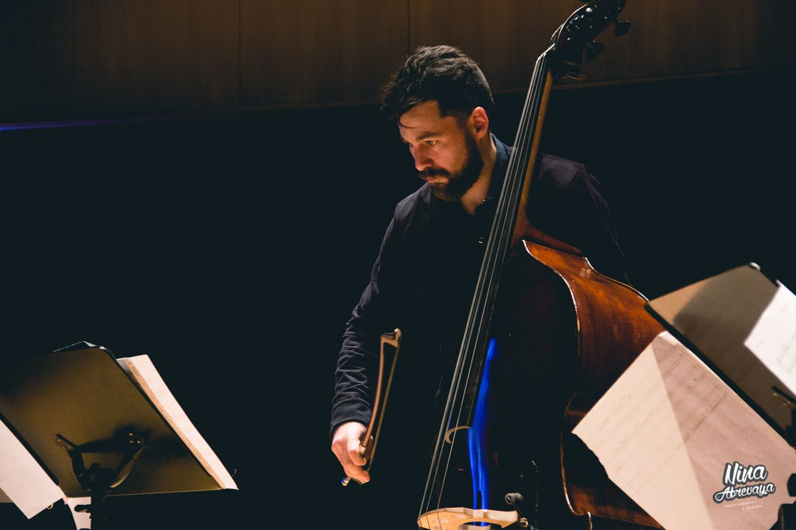
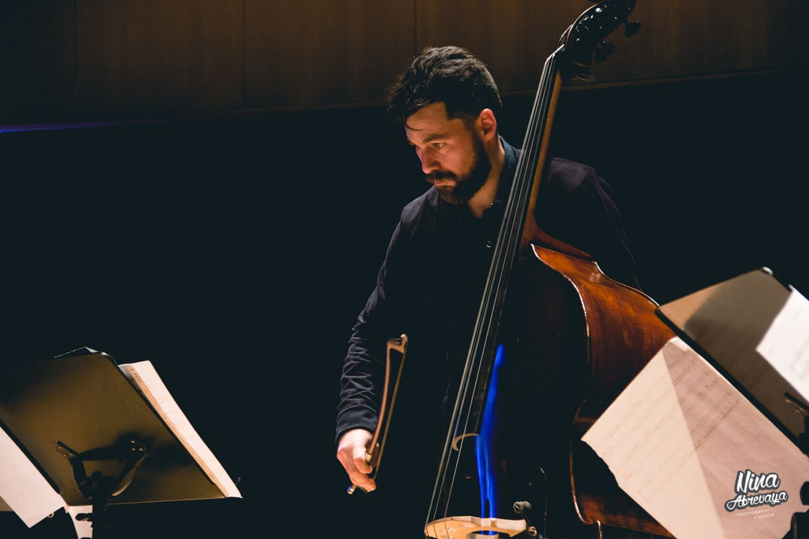

CRISTIAN
BASTO
BIO
Cristian Basto es un músico argentino con Licenciatura en Composición, Diplomado en Música Contemporánea y especializado en Compositores de América Latina. Es arreglador y director de orquestas y ensambles de tango, y actualmente divide su tiempo entre Buenos Aires y Barcelona. Como contrabajista, ha colaborado con destacados artistas de tango y ha participado en proyectos de música antigua, rock y música urbana. Su obra ha sido presentada en prestigiosos escenarios y festivales alrededor del mundo, logrando nominaciones a los Latin Grammy y recibiendo reconocimientos como el Premio Carlos Gardel y una mención honorífica en el SONUS International Music Festival.
Ver más
Cristian Basto es un músico argentino nacido en Quilmes, Provincia de Buenos Aires. Es contrabajista, docente y Licenciado en Composición, además de un destacado arreglador y director de orquestas de tango. Graduado de la Universidad Maimónides, posee un Diploma en Música Contemporánea otorgado por el Conservatorio Superior Manuel de Falla y en “Compositores de América Latina: Miradas Convergentes” por la Universidad Nacional Autónoma de México (UNAM). Su formación también incluye estudios en la Escuela Municipal de Bellas Artes (E.M.B.A.) "Carlos Morel" de Quilmes y en la Escuela de Música Popular de Avellaneda (E.M.P.A.). Ha tenido el privilegio de perfeccionarse en composición y arreglos bajo la guía de reconocidos maestros como Daniel Montes, Laura Baade, Diego Schissi, Daniel Ruggiero, Ricardo Hegman y Ariel Hagman. Como contrabajista, su formación estuvo a cargo de destacados músicos como Gerardo Ponce, Daniel Buono, Juan Pablo Navarro y Daniel Falasca. Su sólida formación académica y profesional ha sido fundamental para consolidar su aporte al tango, destacándose por su visión creativa y su capacidad para enriquecer este género con profundidad artística.
Desempeño artístico A lo largo de su carrera, Cristian ha colaborado con destacados artistas de tango como Amelita Baltar, Amores Tangos, Diego Schissi, Guillermo Fernández, Hernán Possetti, Hilda Herrera, Horacio Romo, José Colángelo, Julieta Laso, La Chicana, Lidia Borda, Luis Borda, Nacha Guevara, Nicolás Guerschberg, Nicolás Ledesma, Noelia Sinkunas, Osvaldo Piro, Pablo Mainetti, "Limón" García, Quasimodo Trío, Quinteto Real, Raúl Garello, Raúl Lavié, Rascasuelos, Susana Rinaldi, Sur del Sur Ensamble y la Orquesta Assintomática. Su versatilidad lo ha llevado también a proyectos de música antigua, rock y música urbana, colaborando en escenarios y estudios con figuras como Antonio Birabent, Chango Spasiuk, Dancing Mood, Lito Vitale, Los Caligaris, Los Fabulosos Cadillacs, Luis Alberto Spinetta, Usted Señalemelo y Ysy-A. Cristian ha actuado en reconocidas salas y festivales a nivel mundial, incluyendo Carnegie Hall y el John F. Kennedy Center for the Performing Arts en Estados Unidos, el National Arts Centre (NAC) en Canadá, el Teatro Colón en Argentina, el Moscow International House of Music en Rusia, el Oriental Art Center en China, el Teatro Sofía en Bulgaria, y festivales como La Villette en Francia, el Roskilde Festival en Dinamarca, Lollapalooza Argentina y el Festival Internacional de Tango de Buenos Aires.
Reconocimientos A lo largo de su carrera, Cristian Basto ha sido galardonado con numerosos premios y menciones. Entre ellos se destacan dos Premios Carlos Gardel: uno por su trabajo como arreglador y músico en el disco La caldera de Julieta Laso, y otro por el disco Salve de Noelia Sinkunas, también como arreglador y músico. Asimismo, su obra Surera para contrabajo y piano recibió una mención honorífica en el SONUS International Music Festival. En 2020, fue beneficiario del Mecenazgo del Ministerio de Cultura de la Ciudad de Buenos Aires para la grabación de su obra Suite Villa Urquiza. En 2024, fue nominado a los Latin Grammy por su labor como arreglador en el disco ¿Y el fin del amor? de Mariana Mazú.

 
